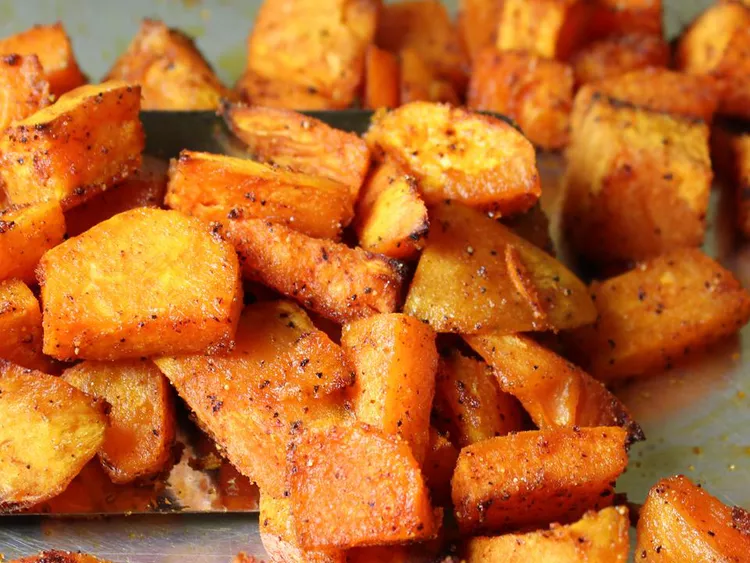

Sweet and Spice Sweet Potatoes

Description
This sweet potato seasoning is also good on chicken pieces.
Ingredients
- 2 large sweet potatoes, peeled and cubed
- 3 tablespoons olive oil
- 1 ½ tablespoons paprika
- 2 teaspoons packed brown sugar
- ½ teaspoon ground black pepper
- ½ teaspoon onion powder
- ½ teaspoon garlic powder
- ½ teaspoon poultry seasoning
- ½ teaspoon chili powder
- 1 pinch cayenne pepper
Instructions
- Preheat the oven to 425 degrees F (220 degrees C).
-
- Place sweet potatoes into a large mixing bowl; drizzle with olive oil. Season with paprika, brown sugar, black pepper, onion powder, garlic powder, poultry seasoning, chili powder, and cayenne pepper; toss until potatoes are evenly coated. Spread onto a baking sheet.
- Bake in the preheated oven for 15 minutes, then turn potatoes over with a spatula. Continue baking until potatoes are golden and tender, 10 to 15 minutes more.